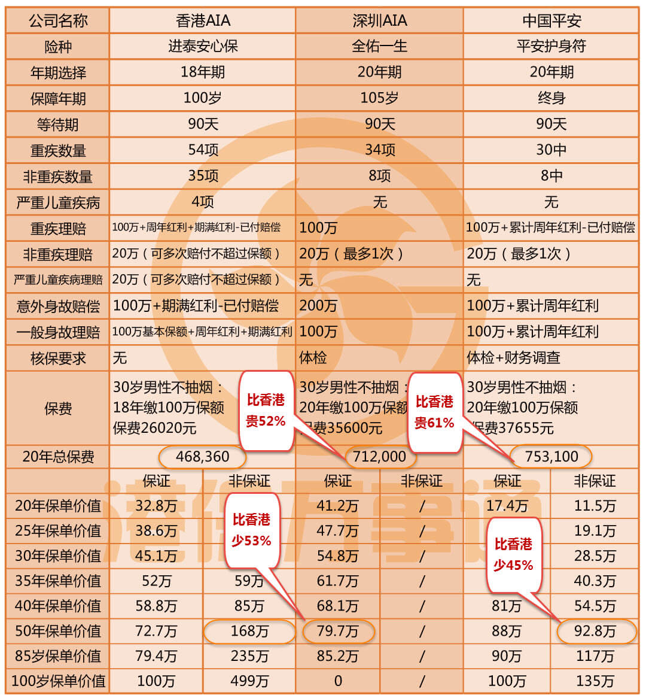

投保案例
INFORMATION我为什么退保内地重疾险,转投香港重疾险?
本文最大的目的是想告诉你，如果考虑买保险，除了大陆的产品，还有多一重选择。关于香港保险，网络上以讹传讹的信息很多。同样的问题，可能会有完全相反的答案。所以，下文所有数据、事实、法律条文，我力求都提供原始出处，供读者核对。例如，就内地居民购买香港保险的合法性问题，我专门致邮香港保险监理处，力求白纸黑字，令人信服。
一、为何跑到香港买重疾险
我是在叮当出生那年给叮当爸买了一份大陆友bang保险公司的“全佑一生”重疾险。 2014年将大陆的重疾险退保了，和叮当爸双双到香港买了两份重疾险。退保的代价是，这四五年的保费基本打了水漂，即便如此，我还是觉得值得，香港重疾险的优势有三点：
1、理赔宽松
大陆和香港的重疾险差别中，最打动我的是，大陆重疾险的赔付条件非常苛刻，不管是在诊断方法上，还是在治疗方法上，都有很多限制，甚至是“保死不保生”，而香港重疾险的赔付条件则宽松很多。这方面的对比详见文章第三部分。我买重疾险的目的是，万一发生重疾了，能有一笔钱治病救人，而不是人都快game over了，保险给我一笔钱。
2、保障范围广
我在香港买的重疾险保障54种重大疾病，34种早期危疾；退保的大陆的重疾险只保障34种重疾。
3、便宜
即便只算保证可得金额部分，香港友邦重疾险的保费是大陆友邦的8折。
香港重疾险品种很多，甚至同一家保险公司都有多款重疾险产品。我结合自己做的功课和别人的推荐，圈定了3家保险公司共计4款产品。分别是：宏利公司的“自在生活危疾保”、友邦公司的“进泰安心保”、“泰然安心保”、英国保诚的“危疾终身保计划”。最后选择了友邦的进泰安心保。当时做的一张分析比较图，如图：

其中的保障杠杆数，可以通俗地理解为：你付出1元钱的保费，能给你带来多少钱的保额。保障杠杆数最能反映一款保险产品的性价比，算法是：保障总额÷总保费支出。上图的保障总额，我只计入各保险公司可保证部分，但其实不保证部分的差别也挺大的。
以上作为我备选的三四款产品，我最后选择友邦的进泰安心保，只是基于我家庭的需求和喜好，不代表这款产品就是绝对最好的。香港保险市场竞争激励，结果就是保险产品极大丰富，各有各的优劣，很难有一款产品绝对的一枝独秀，所以前期的甄别很重要。
二、香港、大陆保险理赔界定对比（以友邦保险为例）
除了重疾保障数量上，香港比大陆多了20种之外，对理赔条件的界定，香港和大陆之间差别非常大！具体理赔条件全部在合同中体现，所以想提醒各位：买保险时，一定要提前要求代理人或代理公司提供保险合同！
因为我在香港和大陆买的都是同一家保险公司的重疾险，作一不完全对比。大家可以看到，即便同一家保险公司，在香港和大陆的差别都这么大，更何况不同的保险公司呢！所以，一定要提前研读保险合同！一定要提前研读保险合同！一定要提前研读保险合同！重要的事情说三遍！
但我在买保险的过程中，不管是香港，还是大陆，没有一个保险代理人主动告诉我，我可以并且应该提前看合同！一定要自己提出看合同！
1、感染艾滋病病毒
【香港】保障因输血和职业而感染的艾滋病。
【大陆】一概不保。
2、脑中风
【香港】中风后持续最少4周的神经后遗症，及因而导致永久性神经机能缺损。
【大陆】要求在中风确诊180天后，仍遗留神经系统永久性的功能障碍。
3、良性脑肿瘤
【香港】脑部或颅脑膜内的良性肿瘤，并产生显示颅内压增高的症状，例如：视神经乳头水肿、精神症状、癫痫及感觉障疑。良性脑肿瘤的存在必须由影响研究如电脑扫描（CT）或磁力共振（MRI）造影确定
【大陆】在香港的界定之外，还须满足下列至少一项条件：
实际实施了开颅进行的脑肿瘤完全切除或部分切除的手术；
实际实施了对脑肿瘤进行的放射治疗。
4、昏迷
【香港】对外来刺激或体内需求毫无反应，并与永久性神经机能缺损有关及持续最少96小时，并需要利用生命维持系统。
【大陆】除了香港的界定条件外，另对昏迷程度有要求——按照格拉斯哥昏迷分级结果为5分或5分以下。
注：格拉斯哥昏迷分级，最高分为15分，表示意识清楚；8分以下即为昏迷；分数越低则意识障碍越重。8分以上不叫昏迷，换而言之，香港对昏迷的要求，8分以下即可；大陆则要5分或5分以下。
5、慢性肝病
【香港】须由以下症状证明：
（1）持续性黄疸；（2）腹水，及；（3）肝性脑病。
【大陆】除香港的3项诊断要求外，还必须要——充血性脾肿大伴脾功能亢进或食管胃底静脉曲张。
6、原发性肺动脉高血压
【香港】严重程度达到纽约心脏病学会的心功能分级标准之Ⅲ或Ⅳ级即可。
【大陆】严重程度达到纽约心脏病学会的心功能分级标准的Ⅳ级，且静息状态下肺动脉平均压超过30mmHg
注：纽约心脏病学会按疾病的严重程度，从轻到重设为四个等级，分别是Ⅰ、Ⅱ、Ⅲ、Ⅳ级。其中，Ⅲ级：显着功能限制，病人在休息时方觉舒适，但在进行少于正常体力消耗之活动时则会出现充血性心脏衰竭的症状。
Ⅳ级：不能从事任何体力活动，休息时亦有充血性心衰或心绞痛症状，任何体力活动后加重。
7、心肌病
【香港】要求心功能衰竭程度达到纽约心脏病学会的心功能分级标准之Ⅲ或Ⅳ级，或其同等级别，并持续最少6个月。
【大陆】要求心功能衰竭程度达到纽约心脏病学会的心功能分级标准之Ⅳ级。被保险人永久不可逆性的体力活动能力受限，不能从事任何体力活动。
注：1. 纽约心脏病学会的心功能分级标准见上一条。
2. 对“永久不可逆”，大陆友bang有专门的一条释义“指自疾病确诊或意外伤害发生之日起，经过积极治疗一百八十天后，仍无法通过现有医疗手段恢复”。问题是，如何界定“治疗”是消极和还是积极的？
8、失聪
【香港】要求听力损失最少80分贝，及不可复原。须提供包括听力测试和声域测试的医学证明，而失聪之诊断必须由耳、鼻、喉专科注册医生确定。
【大陆】双耳听力永久不可逆性丧失，要求听力损失大于90分贝，且经纯音听力测试、声导抗检测或听觉诱发电位检测等证实。
注：1.根据世卫组织（WHO-1997）的听力损失分级标准，平均听力损失大于等于81分贝，则为极重度听力损失。
2.“永久不可逆”释义见上。
9、失明
【香港】因疾病或受伤导致的永久性双目完全失去视力。失明必须经眼专科注册医生确定。
【大陆】指因疾病或意外伤害导致双眼视力永久不可逆性丧失，双眼中较好眼须满足下列至少一项条件：
眼球缺失或摘除
矫正视力低于0.02（采用国际标准视力表，如果使用其他视力表应进行换算）
视野半径小于5度
注：“永久不可逆”释义见上。
10、丧失语言能力
【香港】因疾病或受伤导致完全丧失说话能力及不可复原，并持续12个月。必须由耳、鼻、喉专科注册医生提供医疗证明以确定声带受损引致丧失语言能力。
【大陆】指因疾病或意外伤害导致完全丧失语言能力，经过积极治疗至少12个月（声带完全切除不受此时间限制），仍无法通过现有医疗手段恢复。
11、终末期疾病
【香港】有适当的专科注册医生确诊（连同书面确认）预期受保人之状况将致受保人于12个月内死亡。受保人必须已不再接受任何积极性治疗，惟缓解疼痛或其他舒缓性措施则除外。
【大陆】差异是——预期受保人在未来6个月内死亡。
三、去香港买保险不得不知的6条背景知识
1、内地人去香港买保险是合法的！
网络上有很多黑香港保险的，最大的谎言莫过于说内地人买香港保险属于“地下保单”，不受法律保护云云。我专门就此问题给香港保险业监理处（香港保险业的政府主管部门）去邮件咨询，对方明确回复“根据《保险公司条例》(香港法例第41章)，在香港获授权的保险公司可在本港境内销售保险，不论是本地人士或非本地人士均可投保。”但合法的前提是，保单签署地必须在香港。香港保险监理处邮件可在其官网查到：http://www.oci.gov.hk/。
内地人去香港买保险，至少已经有十年历史了。但受到媒体广泛关注，是最近三年左右的事。我在百度里以“香港买保险内地”为关键词，搜索相关新闻，检索结果有64.3万条。媒体广泛报道的原因是，这三年内地人到香港买保险的数量，呈井喷式增长。根据香港保险业监理处的统计数据：
2014年，内地访客在香港买的新保单159609份保单，这些新保单的保费总额为244亿元港币；2016年上半年大陆人在香港购买保险规模再创新高——保费高达301亿港元（数据来源：http://zqrb.ccstock.cn/html/2015-06/11/content_83011.htm）。但网络上对香港保险有不少以讹传讹的信息。
2、保单贬值的风险小于大陆
香港的保单是按港币或者美元结算和赔付的，大陆是以人民币结算。很多人拿汇率风险说事，我买保险时也考虑过汇率的问题。说说我当时的考虑。
我的重疾险保单是以美元来结算的，我看重美元作为国际货币的地位。因为重疾险的保费需要长期交，一般是20年左右，在这20年内，美元如果贬值，我的保额缩水，但我每年交的保费也随之减少了，这是等比例的，无所谓亏不亏。20年以后，我已经交完所有的保费，如果美元还缩水，万一发生理赔，我确实有损失。但如果美元升值了，我也随之赚了。美元不升不跌的话，我也不赚不亏。因为，我家的理财产品都是以人民币结算的，本着投资多元化、分散风险想法，我能接受重疾险以美元结算。

扫一扫关注微信公众号
咨询电话:0105151551
公司地址:上海浦东新区
备案号:0-1245187431
版权所属:上海市浦东新区